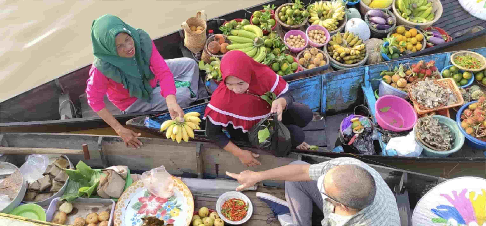

United Nations In Indonesia
Country Results Report 2021
Agriculture and Food Systems Development

Even before the COVID-19 pandemic disrupted global food systems, the world was sliding backwards on hunger. In 2018, some 820 million people did not have enough to eat, while some 678 million of the world’s adults were obese. Like many other countries, Indonesia—which is considered to have the fifth- highest number of stunted children in the world— suffers from the double burden of malnutrition: the co- existence of undernutrition and overnutrition.
The UN is supporting multi-stakeholder efforts to transform Indonesia’s agri-food systems and ensure affordable, healthy diets for all. In 2021, the UN brought together the Ministry of Agriculture and the International Center for Tropical Agriculture’s Alliance Biodiversity to develop a project document on promoting Indonesian crop diversity towards making global food systems more resilient. The document draws on input collected across UN-led workshops as well as baseline studies in Central Java, North Maluku, and Central Kalimantan Provinces. It will help shape regulatory frameworks, and on-the-ground conservation efforts related to developing markets for a broader range of locally grown crops. The UN also supported the Government of Indonesia on arranging one national dialogue and six subnational dialogue sessions on food systems for Indonesia under the auspices of the global 2021 UN Food Systems Summit.
Indonesia is by far the world’s largest producer and exporter of palm oil. The UN’s Green Commodity Programme II Project guided the development of a National Action Plan for Sustainable Palm Oil cultivation, which is designed to build social, economic, and ecological resilience through industry. The national action plan includes groundbreaking gender guidelines for Indonesian Sustainable Palm Oil certification, which the government endorsed after UN research demonstrated direct links between gender issues and sustainable palm oil development. The new national action plan has also helped usher in important regulations related to landscape management at the district level. This contributed to the establishment of special cultivation areas and company-smallholder partnerships in South Tapanuli District; new spatial planning regulations and peatland protection and management measures in Pelalawan District; and a plantation master plan and lake buffer zone in Sintang District.
As the world’s largest archipelagic nation, the responsible stewardship of Indonesia’s waters is as important as the management of its terrestrial territory. In 2021, UN support helped Indonesia’s fisheries sector achieve globally recognized certification. Specifically, the Indonesia Western Center Pacific Ocean yellowfin and skipjack tuna fisheries received the Marine Stewardship Council (MSC) eco-label certification. Meanwhile, the Indonesia Indian Ocean and Western Center Pacific Ocean tuna and Blue Swimming Crab fisheries are on track to meeting the requirements for MSC eco-label certification. UN projects to help improve the governance of tuna and blue swimmer crab fisheries in Indonesia improved the livelihoods of some 310,563 people who rely on the fishing sector, of which 69% are women.
Support for eco-label certification encourages an increase in the production of added value fishery products while maintaining the sustainability of natural resources. Increasing added value is the main strategy behind efforts to transform Indonesia’s economy, in which the fishery sector acts as a prime mover and is expected to provide competitive fishery products.
As part of global efforts to encourage more sustainable fisheries and combat illegal fishing, the UN supported Indonesia’s Ministry of Marine Affairs and Fisheries in the development of the country’s national fish traceability system, known by its Indonesian acronym STELINA. The STELINA system enables the collection of data on fish species, catch volume, location, and climate conditions to be collected at the point of catch, which helps fishermen to plan their catch. Suppliers can use this information to monitor their daily transactions and submit them to processors and exporters per their requirements. For local fish processing units, STELINA can provide useful information for stock balance monitoring and management such as the locations of fishing ports, and government infrastructure facilities to support their coordination. The system also links information on Indonesian fishery products with traceability information systems in regions that receive Indonesian fishery exports, such as the European Union and the United States. This helps fisheries business actors in Indonesia meet the policies and export regulations of destination countries and reduce fish loss and waste, which the UN estimates costs Indonesia $7 billion per year. The UN provided technical support to accelerate the integration of Indonesia’s aquaculture data into STELINA and to strengthen the ability of producers to comply with the system’s traceability requirements.
The UN has also developed several e-agriculture strategies to support the Ministry of Agriculture in shoring up food systems, including incorporating the latest ICT and geospatial technology to monitor early warning indicators of threats. Among these initiatives is the digital village ecosystem concept, a mechanism designed to accelerate digitalization in rural areas to benefit people living in rural and farming communities. Digital Villages offer a sustainable structure through which to introduce technologies that provide services to farmers, such as drones that apply soil testing services, receive early warnings, and weather information, and monitor and diagnose pests and diseases. The Digital Village concept also supports e-extension services for small and medium-scale rural entrepreneurs, including youth and women, making it easier for them to share data with customers, suppliers, and government agents.